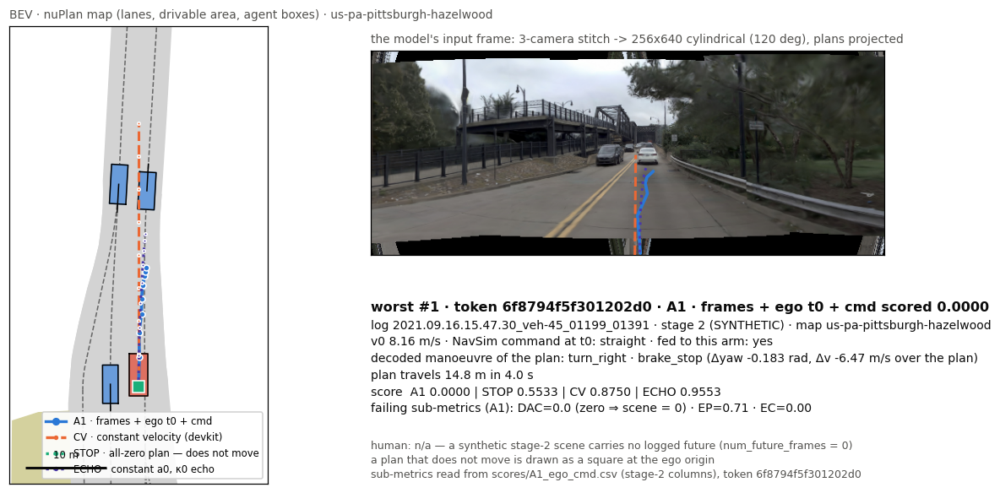
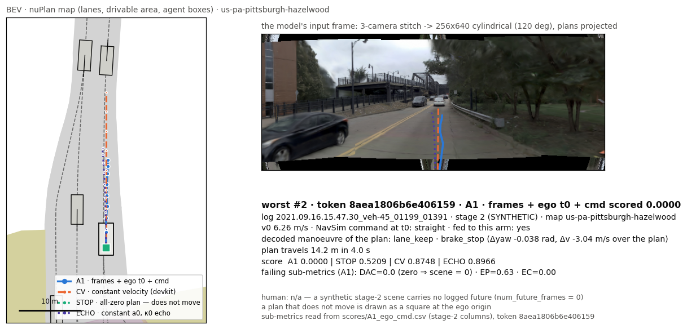
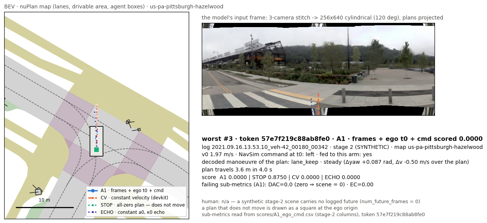
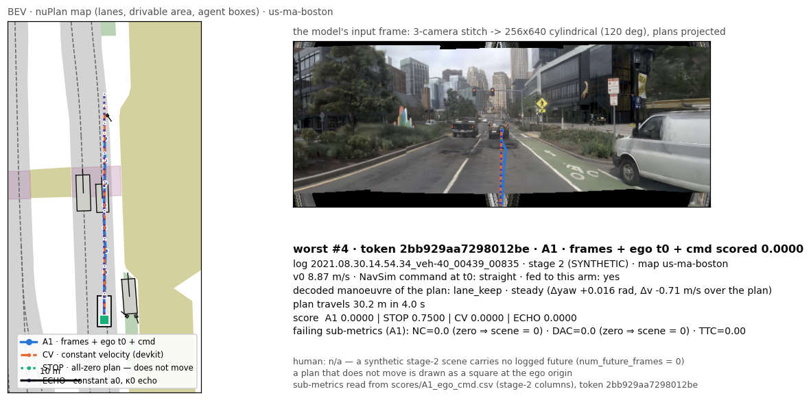
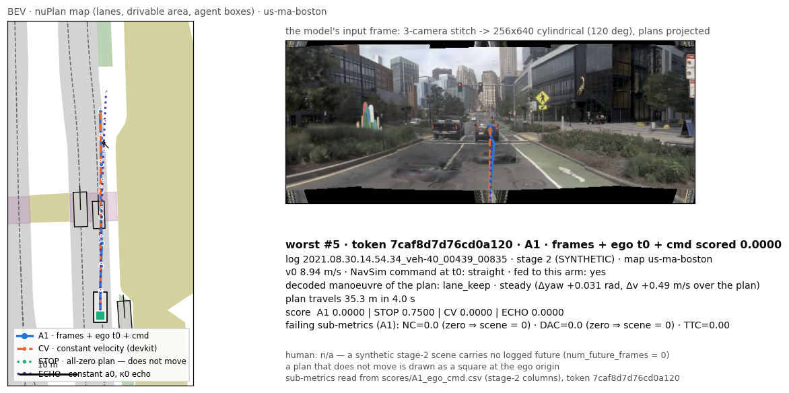
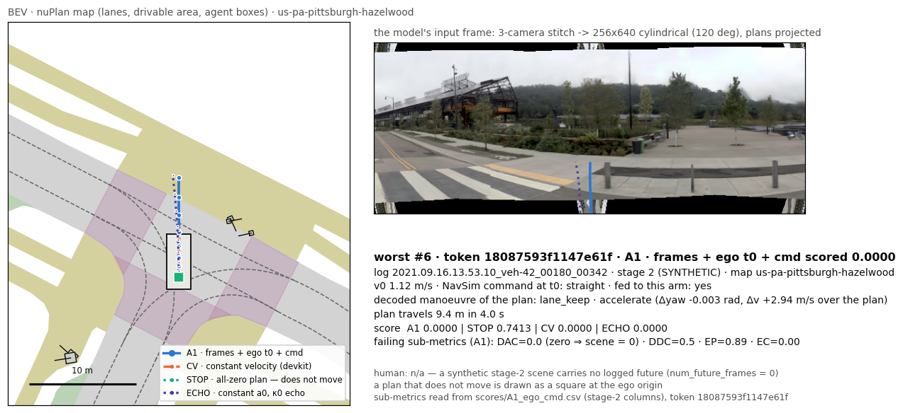
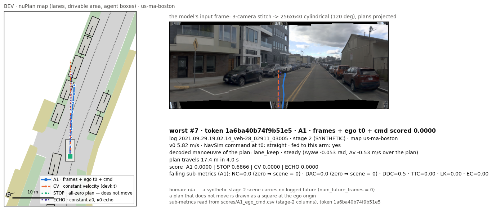
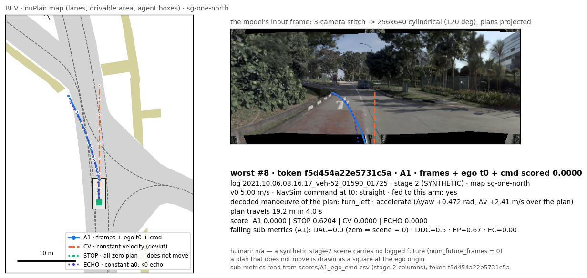

navsim_v2 · warmup_two_stage — A1 · frames + ego t0 + cmd
benchmark / split navsim_v2 / warmup_two_stagescenes · logs 220 · 7checkpoint refcv4b-b1-v72-40kdevice cpuinterval UNAVAILABLEclaim-bearing True
1 · Headline vs the mandatory floors
Each axis carries ONE statistic of ONE protocol. Floors (STOP, CV, ECHO) are the labelled reference lines; our arms are bars (the primary arm in the accent colour); published rows are hollow bars and appear ONLY on the axis of their own protocol tag.
EPDMS — the protocol's official statistic
EPDMS_v2_warmup_two_stage from D:\Projects\TanitAD\products\P7-TanitEval\benchmarks\published_results.json (other protocols in that file are never drawn here). Not on this axis: A1 · frames + ego t0 + cmd, A2 · frames only, A3 · frames + ego t0, no cmd, A1NT · nearest-time history, A2NT · nearest-time, frames only — UNAVAILABLE (n 220): HYBRID — the official two-stage EPDMS of this arm is not its own: 16/220 rows (all of stage 1) were answered by the devkit CV stand-in, which also sets the stage-2 kernel weights. The devkit's row is kept in `statistics.official_rows` and is NOT reported as this arm's EPDMS (E2 RESULT §2).
Interval per arm (never an empty cell — the settled estimator is the LOG-CLUSTER bootstrap, clusters = log_name, B = 2000, n ≥ 8 clusters):
No interval: A1 · frames + ego t0 + cmd, A2 · frames only, A3 · frames + ego t0, no cmd, A1NT · nearest-time history, A2NT · nearest-time, frames only, A4 · frames-blind (grey), CV · constant velocity (devkit), STOP · all-zero plan, ECHO · constant a0, κ0 echo — UNAVAILABLE (n 7): the settled estimator is the LOG-CLUSTER bootstrap (clusters = log_name, B = 2000, n ≥ 8 clusters; W2 2026-09-19/20) and warmup_two_stage has only 7 log groups — below the floor. Point estimates and paired per-scene counts only. ⚠️ A run that did not capture the devkit's pre-CSV frame (`weight`, `log_name`, dropped at run_pdm_score.py:422) has no interval either.
table view
| arm | ×100 | fraction | interval | inputs | kind |
|---|---|---|---|---|---|
| A4 · frames-blind (grey) | 0.0000 | 0.0000 | UNAVAILABLE (n 7) — the settled estimator is the LOG-CLUSTER bootstrap (clusters = log_name, B = 2000, n ≥ 8 clusters; W2 2026-09-19/20) and warmup_two_stage has only 7 log groups… | ⚠ command = route-level ORACLE | model |
| A1 · frames + ego t0 + cmd | UNAVAILABLE (n 220) — HYBRID — the official two-stage EPDMS of this arm is not its own: 16/220 rows (all of stage 1) were answered by the devkit CV stand-in, which also sets the sta… | UNAVAILABLE (n 7) — the settled estimator is the LOG-CLUSTER bootstrap (clusters = log_name, B = 2000, n ≥ 8 clusters; W2 2026-09-19/20) and warmup_two_stage has only 7 log groups… | ⚠ command = route-level ORACLE | model | |
| A2 · frames only | UNAVAILABLE (n 220) — HYBRID — the official two-stage EPDMS of this arm is not its own: 16/220 rows (all of stage 1) were answered by the devkit CV stand-in, which also sets the sta… | UNAVAILABLE (n 7) — the settled estimator is the LOG-CLUSTER bootstrap (clusters = log_name, B = 2000, n ≥ 8 clusters; W2 2026-09-19/20) and warmup_two_stage has only 7 log groups… | — | model | |
| A3 · frames + ego t0, no cmd | UNAVAILABLE (n 220) — HYBRID — the official two-stage EPDMS of this arm is not its own: 16/220 rows (all of stage 1) were answered by the devkit CV stand-in, which also sets the sta… | UNAVAILABLE (n 7) — the settled estimator is the LOG-CLUSTER bootstrap (clusters = log_name, B = 2000, n ≥ 8 clusters; W2 2026-09-19/20) and warmup_two_stage has only 7 log groups… | — | model | |
| A1NT · nearest-time history | UNAVAILABLE (n 220) — HYBRID — the official two-stage EPDMS of this arm is not its own: 16/220 rows (all of stage 1) were answered by the devkit CV stand-in, which also sets the sta… | UNAVAILABLE (n 7) — the settled estimator is the LOG-CLUSTER bootstrap (clusters = log_name, B = 2000, n ≥ 8 clusters; W2 2026-09-19/20) and warmup_two_stage has only 7 log groups… | ⚠ command = route-level ORACLE | model | |
| A2NT · nearest-time, frames only | UNAVAILABLE (n 220) — HYBRID — the official two-stage EPDMS of this arm is not its own: 16/220 rows (all of stage 1) were answered by the devkit CV stand-in, which also sets the sta… | UNAVAILABLE (n 7) — the settled estimator is the LOG-CLUSTER bootstrap (clusters = log_name, B = 2000, n ≥ 8 clusters; W2 2026-09-19/20) and warmup_two_stage has only 7 log groups… | — | model | |
| STOP · all-zero plan | 30.0902 | 0.3009 | UNAVAILABLE (n 7) — the settled estimator is the LOG-CLUSTER bootstrap (clusters = log_name, B = 2000, n ≥ 8 clusters; W2 2026-09-19/20) and warmup_two_stage has only 7 log groups… | — | floor |
| CV · constant velocity (devkit) | 18.5356 | 0.1854 | UNAVAILABLE (n 7) — the settled estimator is the LOG-CLUSTER bootstrap (clusters = log_name, B = 2000, n ≥ 8 clusters; W2 2026-09-19/20) and warmup_two_stage has only 7 log groups… | — | floor |
| ECHO · constant a0, κ0 echo | 22.4785 | 0.2248 | UNAVAILABLE (n 7) — the settled estimator is the LOG-CLUSTER bootstrap (clusters = log_name, B = 2000, n ≥ 8 clusters; W2 2026-09-19/20) and warmup_two_stage has only 7 log groups… | — | floor |
| baseline_constant_velocity (HF warmup leaderboard) [published · warmup.hf_cv] | 18.5356 | — | yes | INHERITED |
S2-EPDMS-u — the statistic every arm has on this run
table view
| arm | S2-EPDMS-u |
|---|---|
| A1 · frames + ego t0 + cmd | 0.4670 |
| A2 · frames only | 0.5211 |
| A3 · frames + ego t0, no cmd | 0.4546 |
| A1NT · nearest-time history | 0.4511 |
| A2NT · nearest-time, frames only | 0.5207 |
| A4 · frames-blind (grey) | 0.0950 |
| STOP · all-zero plan | 0.5212 |
| CV · constant velocity (devkit) | 0.3971 |
| ECHO · constant a0, κ0 echo | 0.4287 |
2 · Paired per-scene win / tie / loss vs each floor
Per scene: arm − floor on the identical tokens. A win on more scenes can still lose on the mean when its losses are multiplicative zeros — read the count beside the Δ, never alone. ⛔ On a two-stage protocol the stages have DIFFERENT token sets, so a per-stage count and a pooled count are different quantities: every chart below states the SCOPE it was counted over.
vs STOP · all-zero plan
table view (Δ per scope)
| arm | Δ official | Δ S2-EPDMS-u | Δ mean (pooled) | W/T/L (pooled) |
|---|---|---|---|---|
| A1 · frames + ego t0 + cmd | n/a | -0.0542 | -0.0614 | 108 / 40 / 56 |
| A2 · frames only | n/a | -0.0001 | -0.0009 | 143 / 53 / 8 |
| A3 · frames + ego t0, no cmd | n/a | -0.0667 | -0.0718 | 105 / 40 / 59 |
| A1NT · nearest-time history | n/a | -0.0702 | -0.0736 | 98 / 45 / 61 |
| A2NT · nearest-time, frames only | n/a | -0.0006 | -0.0020 | 143 / 51 / 10 |
| A4 · frames-blind (grey) | -0.3009 | -0.4262 | -0.4189 | 8 / 38 / 158 |
| CV · constant velocity (devkit) | -0.1155 | -0.1241 | -0.1307 | 83 / 38 / 83 |
| ECHO · constant a0, κ0 echo | -0.0761 | -0.0925 | -0.0918 | 95 / 46 / 63 |
vs CV · constant velocity (devkit)
table view (Δ per scope)
| arm | Δ official | Δ S2-EPDMS-u | Δ mean (pooled) | W/T/L (pooled) |
|---|---|---|---|---|
| A1 · frames + ego t0 + cmd | n/a | +0.0699 | +0.0693 | 51 / 76 / 77 |
| A2 · frames only | n/a | +0.1240 | +0.1299 | 87 / 36 / 81 |
| A3 · frames + ego t0, no cmd | n/a | +0.0575 | +0.0590 | 52 / 75 / 77 |
| A1NT · nearest-time history | n/a | +0.0540 | +0.0571 | 51 / 79 / 74 |
| A2NT · nearest-time, frames only | n/a | +0.1235 | +0.1287 | 86 / 37 / 81 |
| A4 · frames-blind (grey) | -0.1854 | -0.3021 | -0.2881 | 5 / 102 / 97 |
| STOP · all-zero plan | +0.1155 | +0.1241 | +0.1307 | 83 / 38 / 83 |
| ECHO · constant a0, κ0 echo | +0.0394 | +0.0316 | +0.0389 | 57 / 81 / 66 |
vs ECHO · constant a0, κ0 echo
table view (Δ per scope)
| arm | Δ official | Δ S2-EPDMS-u | Δ mean (pooled) | W/T/L (pooled) |
|---|---|---|---|---|
| A1 · frames + ego t0 + cmd | n/a | +0.0383 | +0.0304 | 55 / 78 / 71 |
| A2 · frames only | n/a | +0.0924 | +0.0909 | 82 / 44 / 78 |
| A3 · frames + ego t0, no cmd | n/a | +0.0258 | +0.0200 | 52 / 81 / 71 |
| A1NT · nearest-time history | n/a | +0.0223 | +0.0182 | 64 / 88 / 52 |
| A2NT · nearest-time, frames only | n/a | +0.0919 | +0.0898 | 83 / 45 / 76 |
| A4 · frames-blind (grey) | -0.2248 | -0.3337 | -0.3271 | 9 / 95 / 100 |
| CV · constant velocity (devkit) | -0.0394 | -0.0316 | -0.0389 | 66 / 81 / 57 |
| STOP · all-zero plan | +0.0761 | +0.0925 | +0.0918 | 63 / 46 / 95 |
3 · Sub-metrics per stage, and the multiplicative zeros
EPDMS_v2: multipliers NC, DAC, DDC, TLC (a zero anywhere zeroes the scene) × weighted EP·5, TTC·5, LK·2, HC·2, EC·2 / 16. Uniform scene means of the devkit per-token rows; a stage an arm did not answer itself is refused with its reason.
stage two
| arm | score | NC | DAC | DDC | TLC | EP | TTC | LK | HC | EC |
|---|---|---|---|---|---|---|---|---|---|---|
| A1 · frames + ego t0 + cmd | 0.445 | 0.799 | 0.770 | 0.858 | 0.961 | 0.566 | 0.794 | 0.559 | 0.971 | 0.402 |
| A2 · frames only | 0.505 | 0.926 | 0.926 | 0.983 | 0.980 | 0.365 | 0.926 | 0.593 | 0.662 | 0.235 |
| A3 · frames + ego t0, no cmd | 0.435 | 0.799 | 0.765 | 0.860 | 0.956 | 0.564 | 0.794 | 0.549 | 0.971 | 0.431 |
| A1NT · nearest-time history | 0.433 | 0.799 | 0.750 | 0.843 | 0.961 | 0.565 | 0.789 | 0.564 | 0.907 | 0.451 |
| A2NT · nearest-time, frames only | 0.504 | 0.922 | 0.922 | 0.980 | 0.980 | 0.375 | 0.922 | 0.598 | 0.662 | 0.235 |
| A4 · frames-blind (grey) | 0.087 | 0.618 | 0.137 | 0.346 | 0.966 | 0.860 | 0.574 | 0.441 | 0.882 | 0.049 |
| CV · constant velocity (devkit) | 0.376 | 0.681 | 0.716 | 0.811 | 0.946 | 0.718 | 0.681 | 0.564 | 0.995 | 0.588 |
| STOP · all-zero plan | 0.506 | 0.926 | 0.926 | 0.983 | 0.980 | 0.359 | 0.926 | 0.593 | 0.662 | 0.255 |
| ECHO · constant a0, κ0 echo | 0.415 | 0.765 | 0.686 | 0.777 | 0.961 | 0.584 | 0.755 | 0.529 | 0.995 | 0.853 |
stage one
| arm | score | NC | DAC | DDC | TLC | EP | TTC | LK | HC | EC |
|---|---|---|---|---|---|---|---|---|---|---|
| A4 · frames-blind (grey) | 0.055 | 0.719 | 0.125 | 0.156 | 1.000 | 0.940 | 0.688 | 0.688 | 1.000 | 0.000 |
| CV · constant velocity (devkit) | 0.460 | 0.719 | 0.625 | 0.906 | 1.000 | 0.845 | 0.688 | 1.000 | 1.000 | 0.875 |
| STOP · all-zero plan | 0.578 | 1.000 | 1.000 | 1.000 | 1.000 | 0.374 | 1.000 | 1.000 | 0.188 | 0.000 |
| ECHO · constant a0, κ0 echo | 0.390 | 0.906 | 0.438 | 0.750 | 1.000 | 0.842 | 0.812 | 0.875 | 1.000 | 1.000 |
Refused on this stage: A1 · frames + ego t0 + cmd, A2 · frames only, A3 · frames + ego t0, no cmd, A1NT · nearest-time history, A2NT · nearest-time, frames only — UNAVAILABLE (n 16): STAND-IN: the 16 stage-1 rows are the devkit ConstantVelocityAgent (declared stand-in; 0/192 stage-1 camera jpgs on the box) — not this arm (E2 COMMS D2)
multiplicative-zero rates · stage two
| arm | NC=0 | DAC=0 | DDC=0 | TLC=0 | NC=½ | DDC=½ | score=0 |
|---|---|---|---|---|---|---|---|
| A1 · frames + ego t0 + cmd | 20.1 % | 23.0 % | 10.8 % | 3.9 % | 0.0 % | 6.9 % | 35.3 % |
| A2 · frames only | 7.4 % | 7.4 % | 0.5 % | 2.0 % | 0.0 % | 2.5 % | 16.2 % |
| A3 · frames + ego t0, no cmd | 20.1 % | 23.5 % | 10.3 % | 4.4 % | 0.0 % | 7.4 % | 37.3 % |
| A1NT · nearest-time history | 20.1 % | 25.0 % | 11.3 % | 3.9 % | 0.0 % | 8.8 % | 39.2 % |
| A2NT · nearest-time, frames only | 7.8 % | 7.8 % | 0.5 % | 2.0 % | 0.0 % | 2.9 % | 17.2 % |
| A4 · frames-blind (grey) | 37.7 % | 86.3 % | 56.4 % | 3.4 % | 1.0 % | 18.1 % | 87.3 % |
| CV · constant velocity (devkit) | 31.9 % | 28.4 % | 13.2 % | 5.4 % | 0.0 % | 11.3 % | 49.0 % |
| STOP · all-zero plan | 7.4 % | 7.4 % | 0.5 % | 2.0 % | 0.0 % | 2.5 % | 16.2 % |
| ECHO · constant a0, κ0 echo | 23.0 % | 31.4 % | 19.6 % | 3.9 % | 1.0 % | 5.4 % | 44.1 % |
multiplicative-zero rates · stage one
| arm | NC=0 | DAC=0 | DDC=0 | TLC=0 | NC=½ | DDC=½ | score=0 |
|---|---|---|---|---|---|---|---|
| A4 · frames-blind (grey) | 25.0 % | 87.5 % | 75.0 % | 0.0 % | 6.2 % | 18.8 % | 93.8 % |
| CV · constant velocity (devkit) | 25.0 % | 37.5 % | 6.2 % | 0.0 % | 6.2 % | 6.2 % | 50.0 % |
| STOP · all-zero plan | 0.0 % | 0.0 % | 0.0 % | 0.0 % | 0.0 % | 0.0 % | 0.0 % |
| ECHO · constant a0, κ0 echo | 6.2 % | 56.2 % | 12.5 % | 0.0 % | 6.2 % | 25.0 % | 56.2 % |
the devkit's own summary rows
| arm | stage one | stage two | combined | status |
|---|---|---|---|---|
| A1 · frames + ego t0 + cmd | CV stand-in | HYBRID | HYBRID | not this arm's — not reported |
| A2 · frames only | CV stand-in | HYBRID | HYBRID | not this arm's — not reported |
| A3 · frames + ego t0, no cmd | CV stand-in | HYBRID | HYBRID | not this arm's — not reported |
| A1NT · nearest-time history | CV stand-in | HYBRID | HYBRID | not this arm's — not reported |
| A2NT · nearest-time, frames only | CV stand-in | HYBRID | HYBRID | not this arm's — not reported |
| A4 · frames-blind (grey) | 0.0547 | 0.0950 | 0.0000 | admissible |
| CV · constant velocity (devkit) | 0.4603 | 0.3341 | 0.1854 | admissible |
| STOP · all-zero plan | 0.5777 | 0.5212 | 0.3009 | admissible |
| ECHO · constant a0, κ0 echo | 0.3895 | 0.3998 | 0.2248 | admissible |
4 · Per log
table view (all arms × logs)
| arm | 08.16.14.23.37·00015 | 08.30.14.54.34·00439 | 09.16.13.53.10·00180 | 09.16.15.47.30·01199 | 09.16.19.27.01·01749 | 09.29.19.02.14·02911 | 10.06.08.16.17·01590 |
|---|---|---|---|---|---|---|---|
| A1 · frames + ego t0 + cmd | 0.566 | 0.398 | 0.346 | 0.337 | 0.728 | 0.388 | 0.629 |
| A2 · frames only | 0.466 | 0.564 | 0.565 | 0.429 | 0.688 | 0.377 | 0.632 |
| A3 · frames + ego t0, no cmd | 0.495 | 0.396 | 0.346 | 0.322 | 0.740 | 0.410 | 0.593 |
| A1NT · nearest-time history | 0.530 | 0.394 | 0.346 | 0.343 | 0.756 | 0.344 | 0.559 |
| A2NT · nearest-time, frames only | 0.467 | 0.560 | 0.566 | 0.423 | 0.689 | 0.384 | 0.634 |
| A4 · frames-blind (grey) | 0.000 | 0.114 | 0.156 | 0.034 | 0.287 | 0.041 | 0.076 |
| CV · constant velocity (devkit) | 0.698 | 0.429 | 0.238 | 0.252 | 0.544 | 0.266 | 0.501 |
| STOP · all-zero plan | 0.466 | 0.563 | 0.564 | 0.422 | 0.686 | 0.403 | 0.631 |
| ECHO · constant a0, κ0 echo | 0.296 | 0.338 | 0.347 | 0.380 | 0.746 | 0.320 | 0.626 |
| pair | 08.16.14.23.37·00015 | 08.30.14.54.34·00439 | 09.16.13.53.10·00180 | 09.16.15.47.30·01199 | 09.16.19.27.01·01749 | 09.29.19.02.14·02911 | 10.06.08.16.17·01590 |
|---|---|---|---|---|---|---|---|
| A1 · frames + ego t0 + cmd − CV | -0.131 2/5/13 | -0.031 3/10/17 | +0.108 5/14/3 | +0.086 13/29/20 | +0.184 8/4/10 | +0.122 10/12/8 | +0.128 10/2/6 |
| A1 · frames + ego t0 + cmd − STOP | +0.101 14/2/4 | -0.165 14/1/15 | -0.218 7/8/7 | -0.084 29/16/17 | +0.042 12/4/6 | -0.015 17/9/4 | -0.002 15/0/3 |
5 · Per t0-speed band
table view
| band | n | A1 · frames + ego t0 + cmd | CV · constant velocity (devkit) | STOP · all-zero plan | Δ vs CV (W/T/L) | Δ vs STOP (W/T/L) |
|---|---|---|---|---|---|---|
| v0 < 1 m/s | 36 | 0.668 | 0.636 | 0.689 | +0.031 (7/5/24) | -0.022 (17/7/12) |
| 1 ≤ v0 < 4 m/s | 64 | 0.601 | 0.501 | 0.602 | +0.100 (24/9/31) | -0.001 (53/2/9) |
| 4 ≤ v0 < 8 m/s | 59 | 0.356 | 0.205 | 0.422 | +0.151 (18/27/14) | -0.065 (30/14/15) |
| v0 ≥ 8 m/s | 45 | 0.161 | 0.212 | 0.335 | -0.052 (2/35/8) | -0.174 (8/17/20) |
6 · The four metric families
OUR instruments on trajectory geometry — not NavSim's score. Binding (PI 2026-08-02): all four, per family, never pooled; a family that cannot be computed is shown with its reason and n, never dropped.
LONGITUDINAL
| arm | status | n | speed MAE (m/s) | along-track MAE (m) | accel MAE (m/s²) | speed within 1 m/s (frac) | progress ratio (×) | reason / scope |
|---|---|---|---|---|---|---|---|---|
| A1 · frames + ego t0 + cmd | – UNAVAILABLE | 204 | UNAVAILABLE (n 0) | UNAVAILABLE (n 0) | — | — | — | [stage_two] no human/expert future trajectory supplied, so no geometry family can be computed a… scopes — stage_two: UNAVAILABLE, stage_one: UNAVAILABLE |
| A2 · frames only | – UNAVAILABLE | 204 | UNAVAILABLE (n 0) | UNAVAILABLE (n 0) | — | — | — | [stage_two] no human/expert future trajectory supplied, so no geometry family can be computed a… scopes — stage_two: UNAVAILABLE, stage_one: UNAVAILABLE |
| A3 · frames + ego t0, no cmd | – UNAVAILABLE | 204 | UNAVAILABLE (n 0) | UNAVAILABLE (n 0) | — | — | — | [stage_two] no human/expert future trajectory supplied, so no geometry family can be computed a… scopes — stage_two: UNAVAILABLE, stage_one: UNAVAILABLE |
| A1NT · nearest-time history | – UNAVAILABLE | 204 | UNAVAILABLE (n 0) | UNAVAILABLE (n 0) | — | — | — | [stage_two] no human/expert future trajectory supplied, so no geometry family can be computed a… scopes — stage_two: UNAVAILABLE, stage_one: UNAVAILABLE |
| A2NT · nearest-time, frames only | – UNAVAILABLE | 204 | UNAVAILABLE (n 0) | UNAVAILABLE (n 0) | — | — | — | [stage_two] no human/expert future trajectory supplied, so no geometry family can be computed a… scopes — stage_two: UNAVAILABLE, stage_one: UNAVAILABLE |
| A4 · frames-blind (grey) | ◐ PARTIAL | 16 | 1.879 S1 | 2.702 S1 | 1.213 S1 | 0.414 S1 | 1.304 S1 | [stage_two] no human/expert future trajectory supplied, so no geometry family can be computed a… scopes — stage_two: UNAVAILABLE, stage_one: values |
| CV · constant velocity (devkit) | ◐ PARTIAL | 16 | 0.893 S1 | 1.267 S1 | 0.464 S1 | 0.734 S1 | 1.064 S1 | [stage_two] stage-2 synthetic scenes carry no logged future (num_future_frames = 0, E1 MEASURED… scopes — stage_two: UNAVAILABLE, stage_one: values |
| STOP · all-zero plan | – UNAVAILABLE | 204 | — | — | — | — | — | [stage_two] stage-2 synthetic scenes carry no logged future (num_future_frames = 0, E1 MEASURED… scopes — stage_two: UNAVAILABLE, stage_one: UNAVAILABLE |
| ECHO · constant a0, κ0 echo | – UNAVAILABLE | 204 | — | — | — | — | — | [stage_two] stage-2 synthetic scenes carry no logged future (num_future_frames = 0, E1 MEASURED… scopes — stage_two: UNAVAILABLE, stage_one: UNAVAILABLE |
LATERAL
| arm | status | n | cross-track MAE (m) | heading MAE (°) | curvature MAE (1/m) | yaw-rate MAE (°/s) | reason / scope |
|---|---|---|---|---|---|---|---|
| A1 · frames + ego t0 + cmd | – UNAVAILABLE | 204 | UNAVAILABLE (n 0) | UNAVAILABLE (n 0) | UNAVAILABLE (n 0) | UNAVAILABLE (n 0) | [stage_two] no human/expert future trajectory supplied, so no geometry family can be computed a… scopes — stage_two: UNAVAILABLE, stage_one: UNAVAILABLE |
| A2 · frames only | – UNAVAILABLE | 204 | UNAVAILABLE (n 0) | UNAVAILABLE (n 0) | UNAVAILABLE (n 0) | UNAVAILABLE (n 0) | [stage_two] no human/expert future trajectory supplied, so no geometry family can be computed a… scopes — stage_two: UNAVAILABLE, stage_one: UNAVAILABLE |
| A3 · frames + ego t0, no cmd | – UNAVAILABLE | 204 | UNAVAILABLE (n 0) | UNAVAILABLE (n 0) | UNAVAILABLE (n 0) | UNAVAILABLE (n 0) | [stage_two] no human/expert future trajectory supplied, so no geometry family can be computed a… scopes — stage_two: UNAVAILABLE, stage_one: UNAVAILABLE |
| A1NT · nearest-time history | – UNAVAILABLE | 204 | UNAVAILABLE (n 0) | UNAVAILABLE (n 0) | UNAVAILABLE (n 0) | UNAVAILABLE (n 0) | [stage_two] no human/expert future trajectory supplied, so no geometry family can be computed a… scopes — stage_two: UNAVAILABLE, stage_one: UNAVAILABLE |
| A2NT · nearest-time, frames only | – UNAVAILABLE | 204 | UNAVAILABLE (n 0) | UNAVAILABLE (n 0) | UNAVAILABLE (n 0) | UNAVAILABLE (n 0) | [stage_two] no human/expert future trajectory supplied, so no geometry family can be computed a… scopes — stage_two: UNAVAILABLE, stage_one: UNAVAILABLE |
| A4 · frames-blind (grey) | ◐ PARTIAL | 16 | 2.249 S1 | 11.58 S1 | 0.0230 S1 | 8.31 S1 | [stage_two] no human/expert future trajectory supplied, so no geometry family can be computed a… scopes — stage_two: UNAVAILABLE, stage_one: values |
| CV · constant velocity (devkit) | ◐ PARTIAL | 16 | 1.066 S1 | 7.48 S1 | 0.0155 S1 | 4.47 S1 | [stage_two] stage-2 synthetic scenes carry no logged future (num_future_frames = 0, E1 MEASURED… scopes — stage_two: UNAVAILABLE, stage_one: values |
| STOP · all-zero plan | – UNAVAILABLE | 204 | — | — | — | — | [stage_two] stage-2 synthetic scenes carry no logged future (num_future_frames = 0, E1 MEASURED… scopes — stage_two: UNAVAILABLE, stage_one: UNAVAILABLE |
| ECHO · constant a0, κ0 echo | – UNAVAILABLE | 204 | — | — | — | — | [stage_two] stage-2 synthetic scenes carry no logged future (num_future_frames = 0, E1 MEASURED… scopes — stage_two: UNAVAILABLE, stage_one: UNAVAILABLE |
| arm | cross_mae_m (m) | along-track context (m) | headline.pathgeom_crosstrack_m (lateral.py::frenet_dense) |
|---|---|---|---|
| A4 · frames-blind (grey) | 2.2493 | 2.7019 · LONGITUDINAL family (along_mae_m) | not in this run — headline.pathgeom_crosstrack_m (lateral.py::frenet_dense) |
| CV · constant velocity (devkit) | 1.0658 | 1.2669 · LONGITUDINAL family (along_mae_m) | not in this run — headline.pathgeom_crosstrack_m (lateral.py::frenet_dense) |
TACTICAL
| arm | status | n | lateral decision acc (frac) | lateral κ | longitudinal decision acc (frac) | longitudinal κ | goal-point error (m) | goal bearing MAE (°) | reason / scope |
|---|---|---|---|---|---|---|---|---|---|
| A1 · frames + ego t0 + cmd | – UNAVAILABLE | 204 | — | — | — | — | — | — | [stage_two] no human/expert future trajectory supplied, so no geometry family can be computed a… scopes — stage_two: UNAVAILABLE, stage_one: UNAVAILABLE |
| A2 · frames only | – UNAVAILABLE | 204 | — | — | — | — | — | — | [stage_two] no human/expert future trajectory supplied, so no geometry family can be computed a… scopes — stage_two: UNAVAILABLE, stage_one: UNAVAILABLE |
| A3 · frames + ego t0, no cmd | – UNAVAILABLE | 204 | — | — | — | — | — | — | [stage_two] no human/expert future trajectory supplied, so no geometry family can be computed a… scopes — stage_two: UNAVAILABLE, stage_one: UNAVAILABLE |
| A1NT · nearest-time history | – UNAVAILABLE | 204 | — | — | — | — | — | — | [stage_two] no human/expert future trajectory supplied, so no geometry family can be computed a… scopes — stage_two: UNAVAILABLE, stage_one: UNAVAILABLE |
| A2NT · nearest-time, frames only | – UNAVAILABLE | 204 | — | — | — | — | — | — | [stage_two] no human/expert future trajectory supplied, so no geometry family can be computed a… scopes — stage_two: UNAVAILABLE, stage_one: UNAVAILABLE |
| A4 · frames-blind (grey) | ◐ PARTIAL | 16 | 0.312 S1 | -0.011 S1 | 0.125 S1 | 0.000 S1 | 9.84 S1 | 12.11 S1 | [stage_two] no human/expert future trajectory supplied, so no geometry family can be computed a… scopes — stage_two: UNAVAILABLE, stage_one: OK |
| CV · constant velocity (devkit) | ◐ PARTIAL | 16 | 0.625 S1 | 0.000 S1 | 0.625 S1 | 0.000 S1 | 5.06 S1 | 8.09 S1 | [stage_two] stage-2 synthetic scenes carry no logged future (num_future_frames = 0, E1 MEASURED… scopes — stage_two: UNAVAILABLE, stage_one: OK |
| STOP · all-zero plan | – UNAVAILABLE | 204 | — | — | — | — | — | — | [stage_two] stage-2 synthetic scenes carry no logged future (num_future_frames = 0, E1 MEASURED… scopes — stage_two: UNAVAILABLE, stage_one: UNAVAILABLE |
| ECHO · constant a0, κ0 echo | – UNAVAILABLE | 204 | — | — | — | — | — | — | [stage_two] stage-2 synthetic scenes carry no logged future (num_future_frames = 0, E1 MEASURED… scopes — stage_two: UNAVAILABLE, stage_one: UNAVAILABLE |
STRATEGIC
| arm | status | n | nav compliance (true cmd) (frac) | Δ vs nav withheld | reason / scope |
|---|---|---|---|---|---|
| A1 · frames + ego t0 + cmd | ◐ PARTIAL | 204 | 0.926 S2 | +0.010 S2 | [stage_one] STAND-IN: the 16 stage-1 rows are the devkit ConstantVelocityAgent (declared stand-… scopes — stage_two: UNAVAILABLE, stage_one: UNAVAILABLE |
| A2 · frames only | – UNAVAILABLE | 204 | UNAVAILABLE (n 0) | UNAVAILABLE (n 0) | [stage_two] no human/expert future trajectory supplied, so no geometry family can be computed a… scopes — stage_two: UNAVAILABLE, stage_one: UNAVAILABLE |
| A3 · frames + ego t0, no cmd | – UNAVAILABLE | 204 | UNAVAILABLE (n 0) | UNAVAILABLE (n 0) | [stage_two] no human/expert future trajectory supplied, so no geometry family can be computed a… scopes — stage_two: UNAVAILABLE, stage_one: UNAVAILABLE |
| A1NT · nearest-time history | – UNAVAILABLE | 204 | UNAVAILABLE (n 0) | UNAVAILABLE (n 0) | [stage_two] no human/expert future trajectory supplied, so no geometry family can be computed a… scopes — stage_two: UNAVAILABLE, stage_one: UNAVAILABLE |
| A2NT · nearest-time, frames only | – UNAVAILABLE | 204 | UNAVAILABLE (n 0) | UNAVAILABLE (n 0) | [stage_two] no human/expert future trajectory supplied, so no geometry family can be computed a… scopes — stage_two: UNAVAILABLE, stage_one: UNAVAILABLE |
| A4 · frames-blind (grey) | – UNAVAILABLE | 204 | UNAVAILABLE (n 0) | UNAVAILABLE (n 0) | [stage_two] no human/expert future trajectory supplied, so no geometry family can be computed a… scopes — stage_two: UNAVAILABLE, stage_one: UNAVAILABLE |
| CV · constant velocity (devkit) | – UNAVAILABLE | 204 | — | — | [stage_two] stage-2 synthetic scenes carry no logged future (num_future_frames = 0, E1 MEASURED… scopes — stage_two: UNAVAILABLE, stage_one: UNAVAILABLE |
| STOP · all-zero plan | – UNAVAILABLE | 204 | — | — | [stage_two] stage-2 synthetic scenes carry no logged future (num_future_frames = 0, E1 MEASURED… scopes — stage_two: UNAVAILABLE, stage_one: UNAVAILABLE |
| ECHO · constant a0, κ0 echo | – UNAVAILABLE | 204 | — | — | [stage_two] stage-2 synthetic scenes carry no logged future (num_future_frames = 0, E1 MEASURED… scopes — stage_two: UNAVAILABLE, stage_one: UNAVAILABLE |
7 · Failure gallery — the worst scenes
stage-2 scenes the arm answered itself, ranked by the arm's per-scene `score` ascending, then by its deficit against the best floor on that scene, then by token; at most 2 per log — 8 of 204 candidate scenes. Left: the nuPlan map (lanes, drivable area, agent boxes) drawn by the NavSim devkit's own navsim.visualization, with our plan against the floors. Right: the stitched 3-camera 256×640 cylindrical frame the model actually saw, with the same plans projected through the frame bank's own ray model. Below each: command, decoded manoeuvre and the failing sub-metrics.

log 2021.09.16.15.47.30_veh-45_01199_01391 · stage 2 (SYNTHETIC) · map us-pa-pittsburgh-hazelwood · v0 8.16 m/s · NavSim command at t0: straight · fed to this arm: yes

log 2021.09.16.15.47.30_veh-45_01199_01391 · stage 2 (SYNTHETIC) · map us-pa-pittsburgh-hazelwood · v0 6.26 m/s · NavSim command at t0: straight · fed to this arm: yes

log 2021.09.16.13.53.10_veh-42_00180_00342 · stage 2 (SYNTHETIC) · map us-pa-pittsburgh-hazelwood · v0 1.97 m/s · NavSim command at t0: left · fed to this arm: yes

log 2021.08.30.14.54.34_veh-40_00439_00835 · stage 2 (SYNTHETIC) · map us-ma-boston · v0 8.87 m/s · NavSim command at t0: straight · fed to this arm: yes

log 2021.08.30.14.54.34_veh-40_00439_00835 · stage 2 (SYNTHETIC) · map us-ma-boston · v0 8.94 m/s · NavSim command at t0: straight · fed to this arm: yes

log 2021.09.16.13.53.10_veh-42_00180_00342 · stage 2 (SYNTHETIC) · map us-pa-pittsburgh-hazelwood · v0 1.12 m/s · NavSim command at t0: straight · fed to this arm: yes

log 2021.09.29.19.02.14_veh-28_02911_03005 · stage 2 (SYNTHETIC) · map us-ma-boston · v0 5.82 m/s · NavSim command at t0: straight · fed to this arm: yes

log 2021.10.06.08.16.17_veh-52_01590_01725 · stage 2 (SYNTHETIC) · map sg-one-north · v0 5.00 m/s · NavSim command at t0: straight · fed to this arm: yes
renderer: ["C:\\Users\\Admin\\navsim-crun\\venv\\Scripts\\python.exe", "D:\\Projects\\TanitAD\\taniteval\\taniteval\\benchreport\\navsim_gallery.py", "--job", "D:\\Projects\\TanitAD\\FlyWheels\\TanitAD_EvalFlyW (python 3.9.25) · manifest manifest.json
8 · Provenance and integrity
| run | 20260919T113600Z-navsim_v2-refcv4b_b1_v72_40k-d692cb · utc 2026-09-19T11:36:00Z · status PARTIAL — camera arms are stage-2 only (no stage-1 camera frames on the box): their official two-stage EPDMS is HYBRID and UNAVAILABLE |
|---|---|
| git HEAD | 37645fcc61b158a327e6597e64e0abb64dcbc46d HEAD at ADAPTER time (the source run's own HEAD was not recorded by E2) |
| checkpoint | refcv4b-b1-v72-40k · D:/Projects/TanitAD-artifacts/refcv4b_final/ckpt_40284_FINAL.pt · sha256 UNAVAILABLE — E2 recorded md5 only · md5 99b573e8277d94a5e3bfbf630cb4d751 |
| devkit | autonomousvision/navsim@0a380a9063d7162ec93d0f51e9990ebac585f720
|
| schema (W1 v1) |
|
| source | taniteval.benchreport.adapt.build_e2_run (W5) · FlyWheels/TanitAD_EvalFlyWheel/incoming/2026-09-19-navsim-refcv4b-bridge/raw · leaderboard-eligible False |
| number check | PASS — 920 numbers and 95 refusals re-read from this HTML and checked against summary.json by an independent parser; 0 errors, 0 coverage gaps |
| gallery | RENDERED: 8/8 scenes |
arms
| arm | kind | role | status | declared inputs | files |
|---|---|---|---|---|---|
| A1 · frames + ego t0 + cmd | model | bar | OK | ego_velocity[t0], ego_acceleration[t0], driving_command[t0] | scores · artifact · criteria · plans |
| A2 · frames only | model | ablation | OK | none | scores · artifact · criteria · plans |
| A3 · frames + ego t0, no cmd | model | ablation | OK | ego_velocity[t0], ego_acceleration[t0] | scores · artifact · criteria · plans |
| A1NT · nearest-time history | model | sensitivity | OK | ego_velocity[t0], ego_acceleration[t0], driving_command[t0] | scores · artifact · criteria · plans |
| A2NT · nearest-time, frames only | model | sensitivity | OK | none | scores · artifact · criteria · plans |
| A4 · frames-blind (grey) | model | diagnostic | OK | ego_velocity[t0], ego_acceleration[t0], driving_command[t0] | scores · artifact · criteria · plans |
| CV · constant velocity (devkit) | floor | floor | OK | ego_velocity[t0] | scores · plans |
| STOP · all-zero plan | floor | floor | OK | none | scores · plans |
| ECHO · constant a0, κ0 echo | floor | floor | OK | ego_velocity[t0], ego_acceleration[t0] | scores · plans |
controls carried by the run
| K4_seam_transparency | {"n_tokens": 220, "identical_all_columns": true} |
|---|---|
| BAR_E2_1 | {"A1": 0.46702137433213753, "CV": 0.39713167136274696, "verdict": "PASS", "rule": "S2-EPDMS-u(A1) > S2-EPDMS-u(CV), identical 204 stage-2 tokens"} |
| E2_controls_table | "RESULT.md §4 (K0–K9, KB, KC, KF, KX)" |
summary.json sha256 5f040ef2c3d49779 · every number above is stamped with its summary.json pointer and re-checked by parsing this file (taniteval.benchreport.verify).